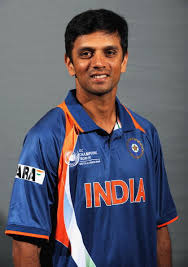

Rahul Sharad Dravid born 11 January 1973 is a former cricket player, ex-captain and ex-coach of the Indian national cricket team Known for his outstanding batting technique, Dravid scored 24,177 runs in international cricket and is widely regarded as one of the greatest batsmen in the history of cricket.He is colloquially known as Mr. Dependable and often referred to as The Wall. He won the 2002 ICC Champions Trophy as a member of the Indian team and guided the Indian team to victory in the 2024 ICC Men's T20 World Cup as the head coach.
Prior to his appointment to the senior men's national team, Dravid was the Head of Cricket at the National Cricket Academy (NCA), and the head coach of the India Under-19 and India A teams. Under his tutelage, the Under-19 team finished as runners-up at the 2016 U-19 Cricket World Cup and won the 2018 U-19 Cricket World Cup. Under his coaching, Indian cricket team finished as runners-up at the 2023 Cricket World Cup and 2023 ICC World Test Championship final and were semifinalist at the 2022 ICC Men's T20 World Cup.
Born in a Marathi family and raised in Bangalore, he started playing cricket at the age of 12 and later represented Karnataka at the under-15, under-17 and under-19 levels. Dravid was named one of the best five cricketers of the year by Wisden Cricketers' Almanack in 2000 and received the Player of the Year and the Test Player of the Year awards at the inaugural ICC awards ceremony in 2004.In December 2011, he became the first non-Australian cricketer to deliver the Bradman Oration in Canberra... wikipedia